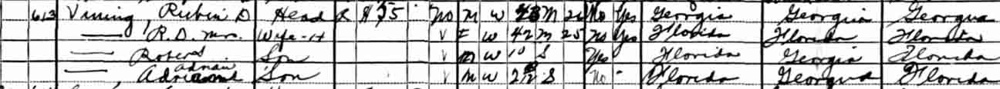
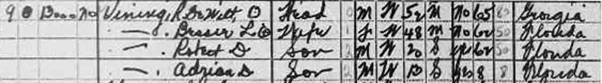
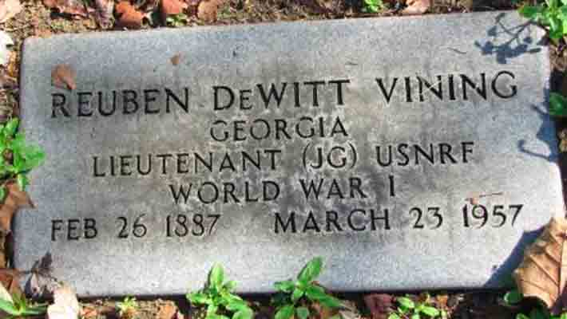
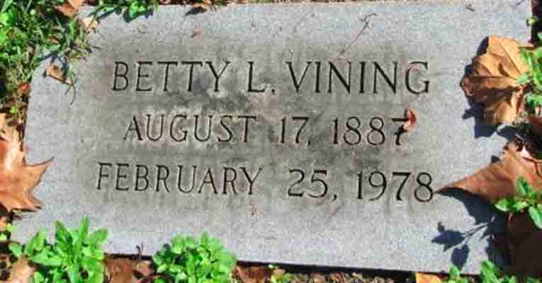

Census Data
| 1910 | 1920 | 1930 | 1940 | |
| Reuben DeWitt Vining | 23 | 32 | [43?] | 52 |
| Betty Genevieve (Langford) Vining | 30 | 42 | 48 | |
| Robert DeWitt Vining | 10 | 20 | ||
| Adrian Vining | 2 y., [?] m. | 13 |


Death Data
Gravestones for Reuben DeWitt Vining and Betty Genevieve Langford, in Oak Hill Burial Park, Lakeland, Florida (from Find A Grave):
